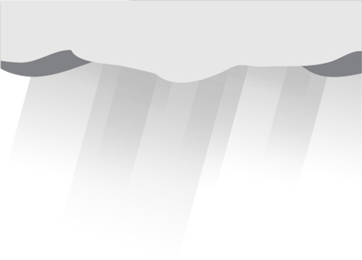
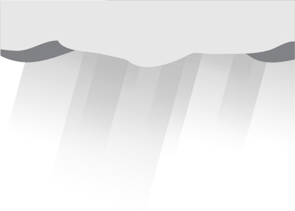
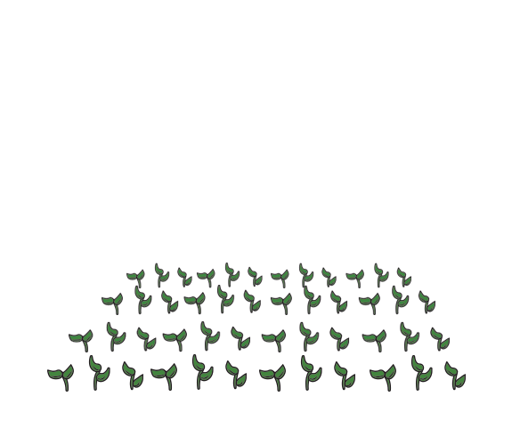
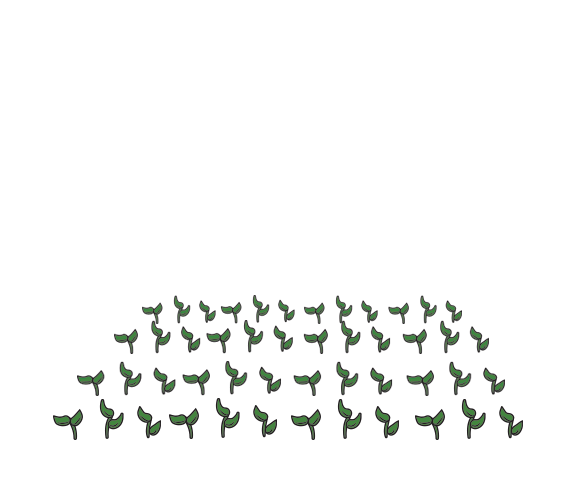
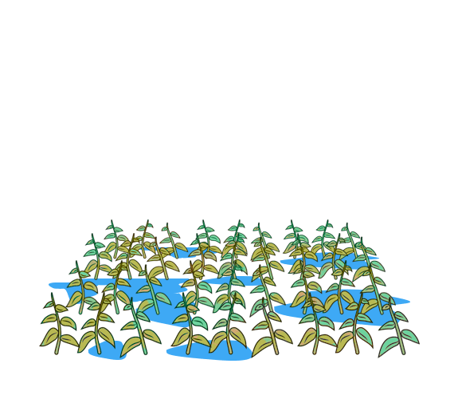
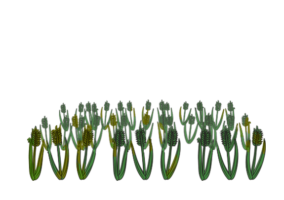
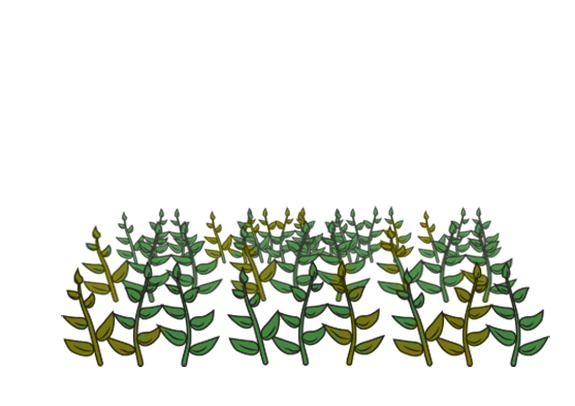
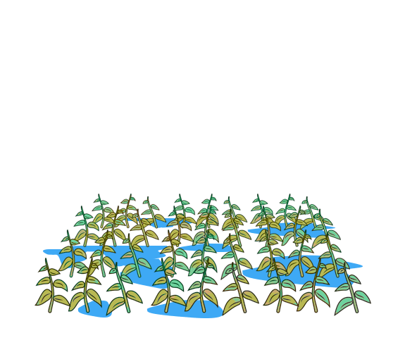
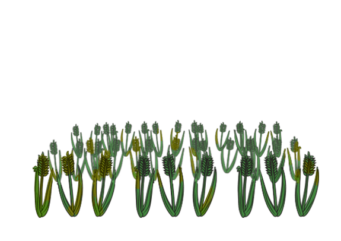
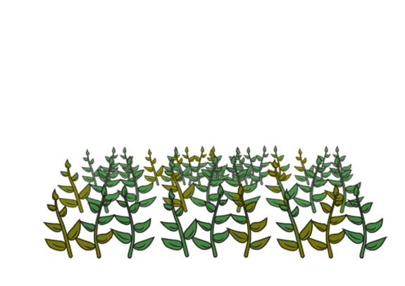

Which crop will you plant?
Welcome to "What Crop".
By playing, you are contributing the academic understanding of economic decision-making.
1. For each turn, plant either Crop A or Crop B based on your best guess about the weather.
2. The points you earn for that crop depend on how wet or dry the weather is.
| A | B | |
|---|---|---|
| Wet | ||
| Dry |
3. You will be paid based on your total score at the end of the game.
In the past 50 years, the has been about .
| Wet | Dry |
|---|---|
4. Please play without stopping for . This may take about 12 minutes.
5. You will earn bonuses when you reach and points!

Creating Game...
 


 



 




